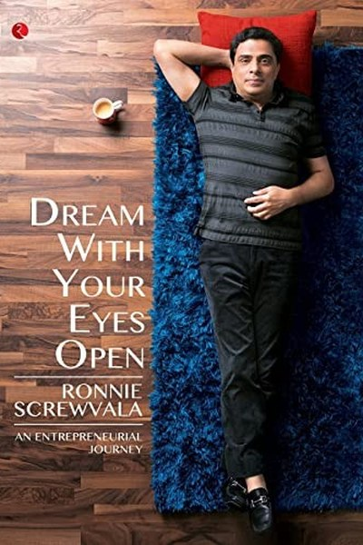

Library › Business & Startups
Dream With Your Eyes Open — Summary & Key Lessons

The man who built UTV on the lessons of failing early and dreaming with both eyes open.
📖 OPEN THE FULL INTERACTIVE BREAKDOWN →🌐 Read it in Hindi, Hinglish, Gujarati, Tamil & 22 more languages — free, with audio.
💡 The Big Idea
Screwvala is India's most candid serial entrepreneur: he failed spectacularly in his first business (a film-printing company that went bankrupt), then built UTV into India's first globally significant media company, sold it to Disney, and started again with a portfolio of purpose-driven companies. His thesis: dreams are necessary but dangerous — you must dream with your eyes open, meaning you plan, execute and iterate like a professional while staying passionate like a fan. Passion is the fuel; discipline is the vehicle.
🧠 The 6 Key Lessons
Lesson 1: Fail Cheap and Early, Then Fail Forward
The First Failure
Screwvala's first venture — a film-printing lab — went bankrupt and taught him more than any success: he learned finance, humility, and the difference between a business and a hobby. His rule: fail small, fail fast, and extract every lesson before the money runs out. Early failure is tuition; late failure is tragedy.
📖 Example: His film-printing company collapsed because he loved films more than the business of printing them. He rebuilt with the same love — and a real business model. The practical edge: 'fail cheap and early, then fail forward' is not a one-time decision — it's a… Read the full example →
⚡ Do this: Reframe your worst business or career failure: what three lessons did it buy you, and how are you using them?
Lesson 2: Passion Is Not a Business Plan
The Reality Check
The title's core warning: dream with your eyes open. Love for the product is necessary; a working model is non-negotiable. Screwvala's method: validate the market, price the economics, and be willing to kill the dream that doesn't pay. He calls this 'the difference between a dreamer and a builder.'
📖 Example: UTV succeeded where his first venture failed because he ran it like a business — distribution, finance, talent contracts — not like a fan club. Here's the part that usually gets missed: 'passion is not a business plan' works quietly. You won't see it working… Read the full example →
⚡ Do this: For your current idea or project: write the unit economics. If they don't work on paper, they won't work in reality.
Lesson 3: Build for Scale From Day One
The Global Play
Screwvala built UTV with a global exit in mind: governance, processes and professional management from the start, so that when Disney came calling, the company was ready. His lesson: you don't start preparing for the big league after you're big — the habits you build at size 10 determine whether you can be size 10,000.
📖 Example: UTV's clean books, honest governance and institutional structure made it acquirable — the 'boring' stuff was what the Disney deal was actually buying. The real test of this lesson is a bad day: the principle that survives a crisis, a tight deadline and a… Read the full example →
⚡ Do this: Build one 'boring' institutional habit now — clean records, written processes, professional accounts — that will matter at 10x your current size.
Lesson 4: Teams Beat Ideas
The People Rule
Screwvala's consistent emphasis: he bets on people more than ideas, because a great team can fix a bad idea but no idea can fix a bad team. His hiring rule: character and hunger over credentials; people who will outwork their job description and tell you the truth. Culture is the only durable moat.
📖 Example: UTV's success across film, TV and gaming came from the same core team re-inventing the model each time — the ideas changed, the people didn't. In practice, 'teams beat ideas' shows up in tiny daily choices long before it shows up in outcomes — the choice is… Read the full example →
⚡ Do this: List your five closest collaborators. Ask honestly: are they raising your standard or lowering it? Adjust your circle accordingly.
Lesson 5: Reinvent Before You're Forced To
The Pivot
UTV moved from content to channels to digital as each model matured — Screwvala's rule is to disrupt yourself before the market does. Waiting for the numbers to force the change is the most expensive strategy. The healthiest companies are those that cannibalize their own success on their own timeline.
📖 Example: UTV transitioned from TV channels to digital platforms ahead of the curve, selling to Disney at the right moment rather than the last moment. Most people nod at this principle and change nothing. The gap between agreeing and acting is where the whole game is… Read the full example →
⚡ Do this: Identify your current cash cow. Design the product or model that will replace it — and start building it this quarter.
Lesson 6: Money Is a Means, Purpose Is the End
The Second Act
After Disney acquired UTV, Screwvala started again — in education, health and rural livelihoods — not for money but for meaning. His lesson: the first act builds wealth, the second act builds worth. Purpose-driven businesses still need business discipline, but they add a filter: does this matter? Success without meaning is a full wallet and an empty life.
📖 Example: His investments in Swades Foundation and education ventures show the same builder's rigor applied to problems, not just profits. The uncomfortable truth about this lesson: it requires doing the boring version first — the unglamorous reps that nobody claps for. Read the full example →
⚡ Do this: Write your 'second act' — the problem you'd work on even without the money. What's one step toward it this year?
✅ 5-Step Action Plan
- Extract three lessons from your worst failure and use them.
- Write the unit economics of your current project.
- Build one institutional habit that matters at 10x scale.
- Audit your circle: are they raising your standard?
- Design the product that will replace your current cash cow.
⚠️ When This Doesn't Work
Screwvala's 'dream with your eyes open' assumes the dreamer can distinguish a real market from a convincing one — Quibi is the proof that even the most disciplined dreamers (top founders, $1.75 billion, flawless execution) can be wrong about demand itself. Eyes-open discipline validates the plan; it cannot validate the premise. The caveat: the most dangerous dream is the one that passes every internal test and fails the only test that matters — will strangers actually pay? Screwvala's method needs one more step: kill the dream early if the market won't fund it.
💀 The Graveyard Proves It
📱 Quibi — $1.75 Billion, Six Months, Gone. Burn: $1.75B in 6 months. Read the full case study →
💬 Best Quotes from Dream With Your Eyes Open
- “Dream with your eyes open — have the dream, but keep the plan.”
- “If you have never failed, you have never really tried anything new.”
- “The idea is 1 percent; execution is the rest.”
Interactive version: mark lessons as read, listen in your language, share quote cards.